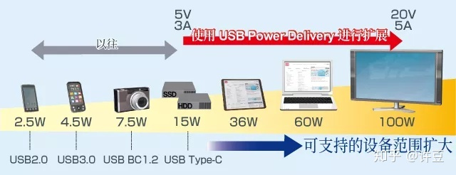
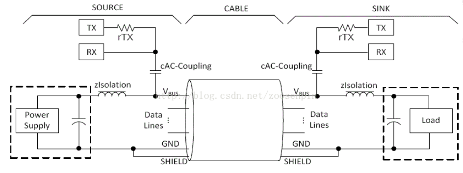
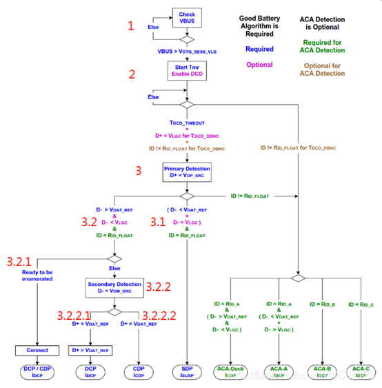
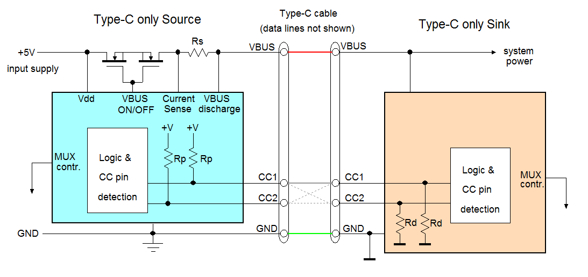
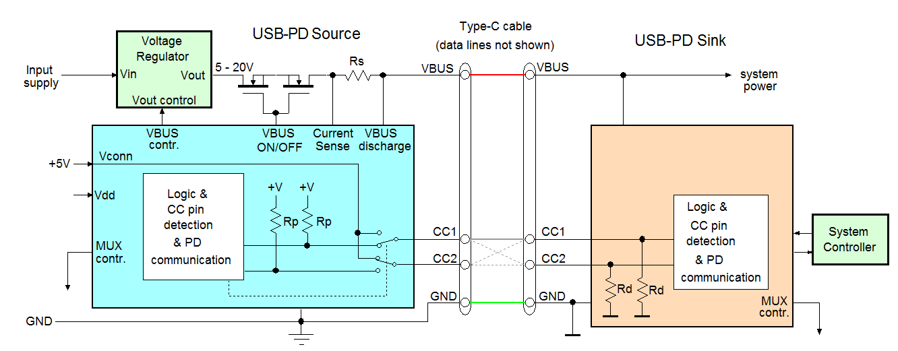
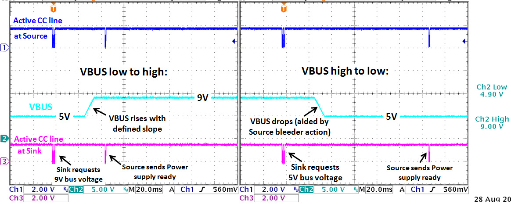
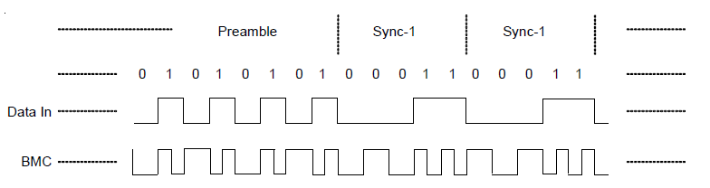
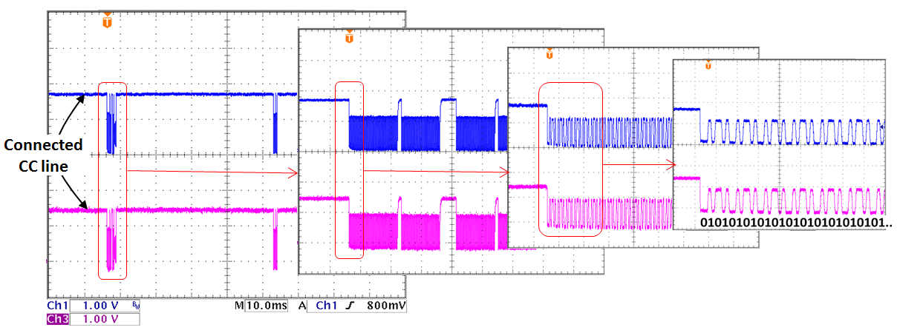

USB PD Protocol
理解USB快充工作原理
参考文档
简述
USB Power Delievry（USB供电/以下简称USB PD）是利用USB（Universal Serial Bus）电缆，最大可100W供电受电的USB供电扩展标准。
以往的USB最大供电功率分别为USB 2.0最大2.5W，USB 3.0最大4.5W，电池用途的充电标准USB BC（Battery Charging）1.2最大7.5W。
USB PD可最大100W供电受电，因此平板电脑、笔记本电脑等以往无法支持的设备也能进行供受电，可支持的设备大幅扩大。并且，可向移动设备快速充电（充电时间缩短）。

PD FSK原理
USB PD v1.0的通信是将协议层的消息调制成24MHZ的FSK信号并耦合到VBUS上或者从VBUS上获得FSK信号来实现手机和充电器通信的过程。如图所示，在USB PD通信中，是将24MHz的FSK通过cAC-Coupling耦合电容耦合到VBUS上的直流电平上的，而为了使24MHz的FSK不对Power Supply或者USB Host的VBUS直流电压产生影响，在回路中同时添加了zIsolation电感组成的低通滤波器过滤掉FSK信号。

BC 1.2

1 检测Vbus。PD（Portable Device，如手机）中有个检测VBUS是否有效的电路，电路有一个参考值，高于这个值就认为是VBUS有效了。这个参考值叫VOTG_SESS_VLD，他是一个范围，最小0.8V，最大4V。仔细观察USB A头里面，Vbus和GND的两个PIN是最长的，目的就是要先接触，Vbus线上电。
2 PD启动定时器，这个时间是TDCD_TIMEOUT=300~900ms。在这个时间内，如果PD不支持DCD（Data Contact Detect，数据连通性检测），超时后将开始下一步。如果支持，PD在D+线上施加电流IDP_SRC（7~3uA），如果PD连接的是SDP，SDP在D+线上有一个下拉电阻RDP_DOWN（14.25~24.8Kohm），此时D+电压为99.75mV~322.4mV，只要PD在D+上检测到的电压小于VLGC_LWO（0.8V），且维持TDCD_DBNC（10ms），DCD就检测成功，开始进入下一步。如果PD插入了其他类型的设备，PD将在D+检测不到电压小于VLGC_LWO的情况，那么将一直等到TDCD_TIMEOUT超时。只有PD连接的是SDP（普通USB口）或者CDP（充电能力强的USB口）的时候，DCD才有用，因为DCD时间段，DCD成功后，立即进入了下一步，而不用等待TDCD_TIMEOUT超时。USB Connect Timing ECN中规定，一个上电的USB设备，要求在连接到host的TSVLD_CON_PWD（1s）内建立连通。
3 Primary detection，首次检测。PD在D+上施加电压 VDP_SRC（D+ Source Voltage 0.5~0.7v），然后PD开始检测D-上的电压。只看蓝色字体，逻辑分为两种可能。
3.1 第一种可能：PD在D-上检测到的电压小于VDAT_REF（Data Detect Voltage 0.25~0.4 v），这个时候说明PD连接到了一个普通的USB口（电脑的USB口）
3.2 第二种可能：PD在D-上检测到的电压大于VDAT_REF（Data Detect Voltage 0.25~0.4 v），说明PD连接到了DCP（充电头，首次检测期间，控制IC会把D+D-短路）或者CDP（充电能力强的USB口，首次检测期间，控制IC会把D+D-短路）。此时又会出现两种情况：
3.2.1 PD立即开始枚举，建立连接。通过配置决定充电电流大小。这种情况比较少。
3.2.2 PD开始做二次检测，PD在D-上施加电压VDM_SRC（0.5~0.7v），然后检测D+上的电压：
3.2.2.1 如果D+大于VDAT_REF（Data Detect Voltage 0.25~0.4 v），则认为是连接的是DCP。DCP是专用充电头，这种充电头内部的IC会再首次和二次检测的时候，短路D+D-。低端仅支持BC1.2的充电头，其内部直接用电阻短路了D+D-。
3.2.2.2 如果D+小于VDAT_REF（Data Detect Voltage 0.25~0.4 v），则认为是连接了CDP。充电能力强的USB口CDP，在首次检测的时候会短路D+D-，但是在完成首次检测后，就断开D+D-。
Type-C无PD协议
参考文档：USB Type-C接口PD协议解决方案
主要看无协议的部分
在不采用电源传输协议的USB Type-C接口中，电源从源端传输到吸端的方法如下图

USB Type-C的源端总是包含有一个用于接通/关断VBUS的MOSFET开关，它也可能具有VBUS电流的检测能力，其主要作用是对过流状况进行检测，另外还会含有VBUS的放电电路。CC1和CC2的检测电路在源端和吸端都会存在。
CC (Channel Configuration) 线的作用是对两个连接在一起的设备进行电源供应的配置。初始情况下，USB Type-C接口的VBUS上是没有电源供应的，系统需要在电缆连接期间进行设备角色的定义，插座上的CC线被上拉至高电平的设备将被定义为电源供应者即源端，而被下拉至低电平的设备将被定义为电源消费者即吸端。
吸端的下拉电阻Rd的定义值是5.1kΩ，因而CC线的电压是由源端上拉电阻Rp的值（或电流源的电流值）决定的。已经定义的总线电流能力有3档，最低的CC线电压（大约0.41V）对应的是默认的USB电源规格（USB 2.0的500mA 或 USB 3.0的900mA），较高的CC线电压（大约0.92V）对应的电流能力是1.5A。假如CC线电压为大约1.68V，对应的最大电流供应能力为3A。
在不含电源传输协议的系统中，总线上的电流供应能力由分压器Rp/Rd确定，但源端只会供应5V电压。
Type-C有PD协议
参考文档：USB Type-C接口PD协议解决方案
主要看带协议的部分
引入电源传输 (Power Delivery, PD) 协议以后，USB Type-C系统的总线电压可以增加到最高20V，源端和吸端之间关于总线电压和电流的交流通过在CC线上传输串行的BMC编码来完成。包含PD协议的USB Type-C系统从源端到吸端的系统框图如图所示

CC(Channel Configuration)线的作用是对两个连接在一起的设备进行电源供应的配置。初始情况下，USB Type-C接口的VBUS上是没有电源供应的，系统需要在电缆连接期间进行设备角色的定义，插座上的CC线被上拉至高电平的设备将被定义为电源供应者即源端，而被下拉至低电平的设备将被定义为电源消费者即吸端。
源端的CC1和CC2通过电阻Rp被拉高，被监测着的CC1/CC2在没有连接任何东西时总是处于高电平，一旦吸端接入，CC1或CC2的电压就被电阻Rd拉低了。由于电缆中只有一条CC线，因而源端可以分辨出是哪个CC端被拉低了。吸端的CC1/CC2的电压也同样被监测着。
源端内部包含了一个电压转换器，它是受源端PD控制器控制的。根据输入电压条件和最高总线电压的需求，该电压转换器可以是Buck、Boost、Buck-Boost或反激式转换器。经过CC线进行的PD通讯也在PD控制器的管控之下。USB PD系统还需要有一个开关可以将Vconn电源切换至一条CC线上。
当电缆的连接建立好以后，PD协议的SOP通讯就开始在CC线上进行以选择电源传输的规格：吸端将询问源端能够提供的电源配置参数（不同的总线电压和电流数据）。由于吸端对电源的需求常常是与吸端的系统有关的（例如电池充电器），吸端的嵌入式系统控制器就需要先与吸端的PD控制器进行通讯以确定相应的规格。如下图吸端的PD控制器申请一个较高的总线电压的例子：

吸端和源端之间在CC线上进行的通讯看起来像如下的样子：
吸端申请获得源端的能力数据；
源端提供它的能力数据信息；
吸端从源端提供的能力数据信息中选出适当的电源配置参数并发出相应的请求；
源端接受请求并将总线电压修改成相应的参数。在总线电压变化期间，吸端的电流消耗会保持尽可能地小。源端提升总线电压的过程是按照定义好的电压提升速度来进行的；
总线电压达到最后的数值以后，源端会等待总线电压稳定下来，再发送出一个电源准备好信号。到了这时候，吸端就可以增加其电流消耗了。当吸端希望总线电压降低的时候，同样的通讯过程也会发生；
在总线电压下降期间，源端会激活一个分流电路，通过主动的总线放电使总线电压快速降低。达到额定值以后，源端会等待一段稍长的时间让总线电压稳定下来，然后再送出一个电源准备好信号。
这样的通讯方法可确保总线上的任何电源变化都落在源端和吸端的能力范围内，避免出现不可控的状况。当Type-C电缆的连接被断开时，总线上的电源也被关断，任何新开始的连接都会进行电缆连接检测，电压也总是处于5V，这样就可以避免在电缆接通时有高电压从一台设备进入另一台设备 。
USB PD通讯使用的是双相标记码 (Bi-phase Mark Code, BMC)，此码是一种单线通信编码，数据1的传输需要有一次高/低电平之间的切换过程，数据0的传输则是固定的高电平或低电平。每个数据包都含有0/1交替的前置码、报文起始码 (Start of Packet, SOP)、报文头、信息数据字节、CRC循环冗余编码和报文结束码 (End of Packet, EOC)，参见下图：

下图展示的是一次要求总线电压升高的PD通讯的波形从密集至展开的样子，从最后展开的波形中可以看出前置码的序列：

BMC通讯数据应该可以用逻辑分析仪抓取分析。